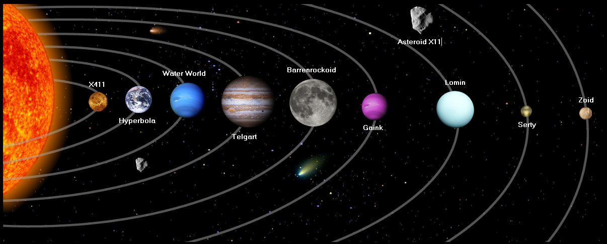
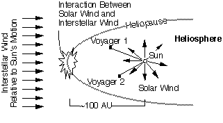

THE SOLAR SYSTEM
Our solar system consists of an average star we call the Sun,
the planets Mercury, Venus,
Earth, Mars,
Jupiter, Saturn,
Uranus, Neptune,
and Pluto. It includes: the satellites of the planets; numerous
comets, asteroids,
and meteoroids; and the interplanetary medium. The Sun is the richest source of electromagnetic energy
(mostly in the form of heat and light) in the solar system. The Sun's nearest known stellar neighbor is a red dwarf star called Proxima Centauri,
at a distance of 4.3 light years away. The whole solar system,
together with the local stars visible on a clear night, orbits the center of our home galaxy,
a spiral disk of 200 billion stars we call the Milky Way.
The Milky Way has two small galaxies orbiting it nearby, which are visible from the southern hemisphere.
They are called the Large Magellanic Cloud and the Small Magellanic Cloud.
The nearest large galaxy is the Andromeda Galaxy.
It is a spiral galaxy like the Milky Way but is 4 times as massive and is 2 million light years away. Our galaxy,
one of billions of galaxies known, is traveling through intergalactic space.
The planets, most of the satellites of the planets and the asteroids revolve around the Sun in the same direction,
in nearly circular orbits. When looking down from above the Sun's north pole, the planets orbit in a counter-clockwise direction.
The planets orbit the Sun in or near the same plane, called the ecliptic.
Pluto is a special case in that its orbit is the most highly inclined (18 degrees) and the most highly elliptical of all the planets.
Because of this, for part of its orbit, Pluto is closer to the Sun than is Neptune.
The axis of rotation for most of the planets is nearly perpendicular to the ecliptic.
The exceptions are Uranus and Pluto, which are tipped on their sides.
COMPOSITION Of THE SOLAR SYSTEM
The Sun contains 99.85% of all the matter in the Solar System. The planets, which condensed out of the same disk of material that formed the Sun,
contain only 0.135% of the mass of the solar system. Jupiter contains more than twice the matter of all the other planets combined.
Satellites of the planets, comets, asteroids, meteoroids, and the interplanetary medium constitute the remaining 0.015%.
The following table is a list of the mass distribution within our Solar System
- Sun: 99.85%
- Planets: 0.135%
- Comets: 0.01% ?
- Satellites: 0.00005%
- Minor Planets: 0.0000002% ?
- Meteoroids: 0.0000001% ?
- Interplanetary Medium: 0.0000001% ?
INTERPLANETARY SPACE
Nearly all the solar system by volume appears to be an empty void. Far from being nothingness,
this vacuum of "space" comprises the interplanetary medium. It includes various forms of energy and at least two material components:
interplanetary dust and interplanetary gas. Interplanetary dust consists of microscopic solid particles.
Interplanetary gas is a tenuous flow of gas and charged particles,
mostly protons and electrons -- plasma -- which stream from the Sun, called the solar wind.
The solar wind can be measured by spacecraft, and it has a large effect on comet tails.
It also has a measurable effect on the motion of spacecraft.
The speed of the solar wind is about 400 kilometers (250 miles) per second in the vicinity of Earth's orbit.
The point at which the solar wind meets the interstellar medium, which is the "solar" wind from other stars,
is called the heliopause. It is a boundary theorized to be roughly circular or teardrop-shaped,
marking the edge of the Sun's influence perhaps 100 AU from the Sun.
The space within the boundary of the heliopause, containing the Sun and solar system, is referred to as the heliosphere.